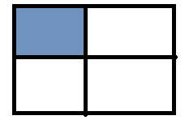
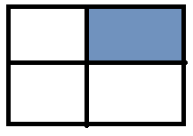
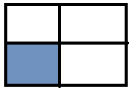
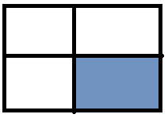

- Задача 1 Знайти суми елементів у вказаній області
1.2.3.4.5.Суму парних рядків6.Суму непарних стовпців7.У парних рядках – непарні стовпці, у непарних – парні.
- Задача 2 Дано інформацію про прибуток К магазинів протягом тижня. Знайти : 1. загальний прибуток кожного масиву за тиждень; 2. загальний прибуток усіх магазинів по дням (загальний прибуток усіх магазинів за понеділок, за вівторок, і т.д.); 3. загальний прибуток за робочі дні 4. загальний прибуток за вихідні дні 5. максимальний прибуток за середу 6. сформувати загальний список (одновимірний масив) зі значенням, які що більші за 200 7. відсортувати кожен тиждень за зростанням 8. відсортувати тижні (рядки) за спаданням максимального елементи у цьому тижні (рядку), тобто при порівнянні рядків потрібно порівнювати максимальні елементи у кожному з цих рядків 9. упорядкувати тижні (рядки) за спаданням суми елементів у рядку (тобто при порівнянні двох рядків треба знайти суму кожного з рядків і порівнювати ці суми, на основі цих сум буде зрозуміло, який з елементів повинен іти раніше).
- Задача 3 Морський бій. Випадковим чином на двовимірному полі розміром 6*6 розташовується 5 кораблів. Користувач стріляє вказуючи координати. Гра продовжується поки не потоплено усі кораблі або у користувача не закінчаться снаряди.